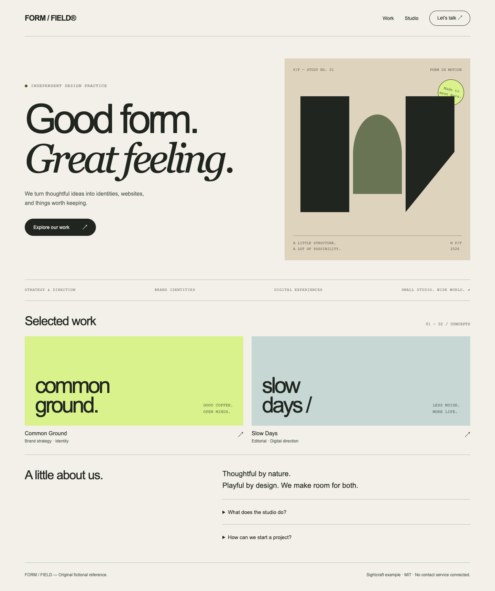
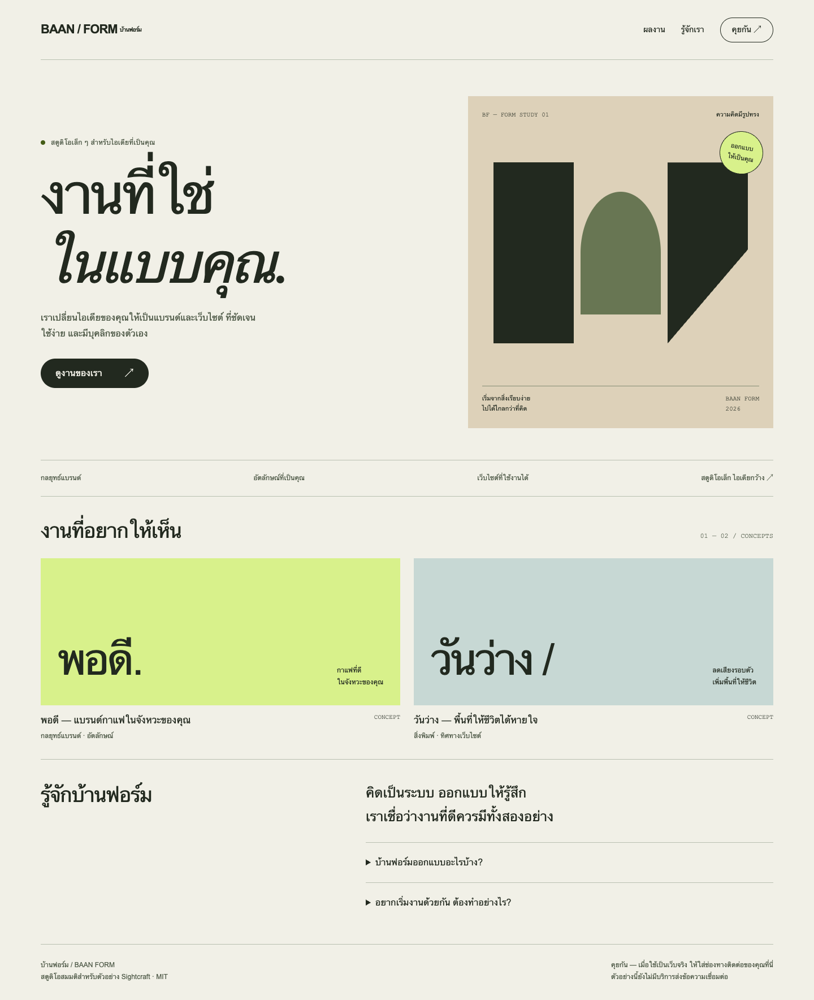
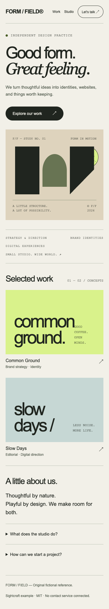
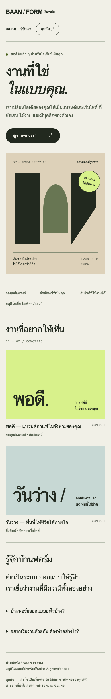

อ่านภาพให้เป็นแบบ
แยกสิ่งที่เห็น ค่าประมาณ และข้อเสนอเพิ่ม สี ฟอนต์ และระยะห่างมีที่มาชัดเจน
ดู DESIGN.md ↗ตัวอย่างครบทาง · แบรนด์สมมติ · ไฟล์ทั้งหมดอยู่ในชุด


นี่คือตัวอย่างที่ผู้จัดทำออกแบบทั้งต้นแบบและผลลัพธ์ เพื่อแสดงวิธีใช้ไฟล์ร่วมกัน ความเหมือนยังต้องตรวจจากเว็บที่สร้างจริง ไม่ใช่ผลทดสอบโมเดลแบบอิสระ
แยกสิ่งที่เห็น ค่าประมาณ และข้อเสนอเพิ่ม สี ฟอนต์ และระยะห่างมีที่มาชัดเจน
ดู DESIGN.md ↗พรอมป์ต์รวมเนื้อหา เลย์เอาต์ tokens และเกณฑ์ตรวจ รักษา stack เดิมของโปรเจกต์
ดู BUILD-PROMPT.md ↗ภาพถูกตัดไม่ได้บอกส่วนล่างของหน้า Skill ต้องบอกสิ่งที่ยังไม่ทราบก่อนเสนอเพิ่ม
ดูกรณีภาพถูกตัด ↗

DESIGN.md และ BUILD-PROMPT.mdชุดไฟล์ไม่ต้องใส่ API key เพิ่ม ค่าใช้ AI ขึ้นกับบริการที่คุณเลือก ส่วนตัวอย่างนี้เปิดในเครื่องได้และไม่ส่งข้อมูลออกไป
Orbit Store · Local cart · Summary download
เพิ่มสินค้า ปรับจำนวน เปิดตะกร้าและบันทึกสรุปลงเครื่อง พร้อม animation ที่รองรับ reduced motion
เดโมนี้เก็บตะกร้าและสรุปในเครื่อง ไม่มีการส่งออเดอร์หรือรับชำระเงินจริง